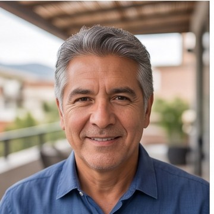
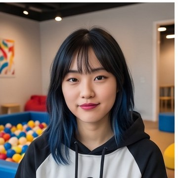
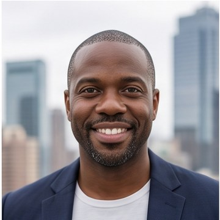
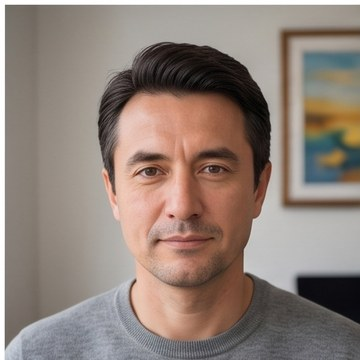
The agent that
remembers everyone
you have met.
It reads the archive you already own, builds the graph, and drafts the follow-up inside the thread where the promise was made.
You have met
a thousand people.
You remember twenty.
The network is already yours. It just isn’t retrievable at the moment it matters.
someone there.
remember.
Feed it what you already own.
Same shape every time: an archive the user already owns, exported by them — never scraped.
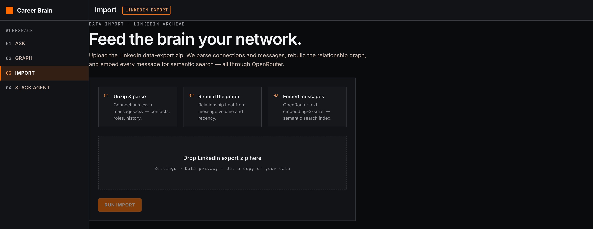
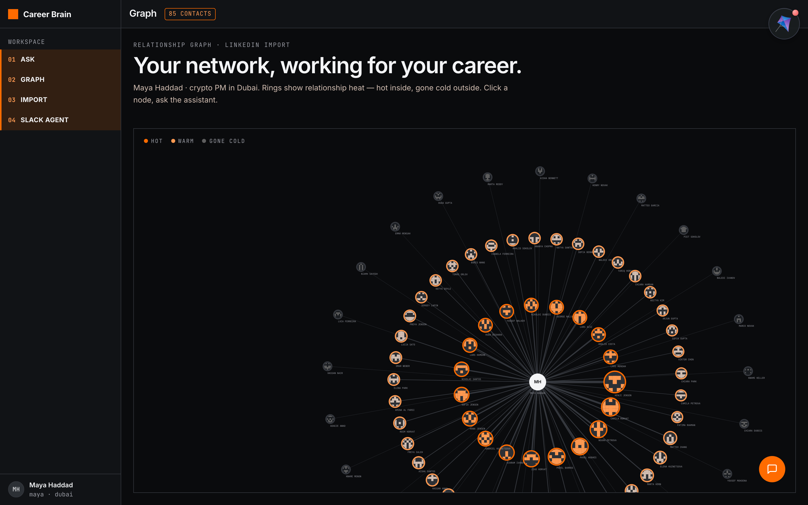
Three people, ranked by how warm the path is — and what you last said to them.
Every line is a message it can point at — the graph gives the who and when, the index gives the what.
From an export they already own — to a record the team can see.
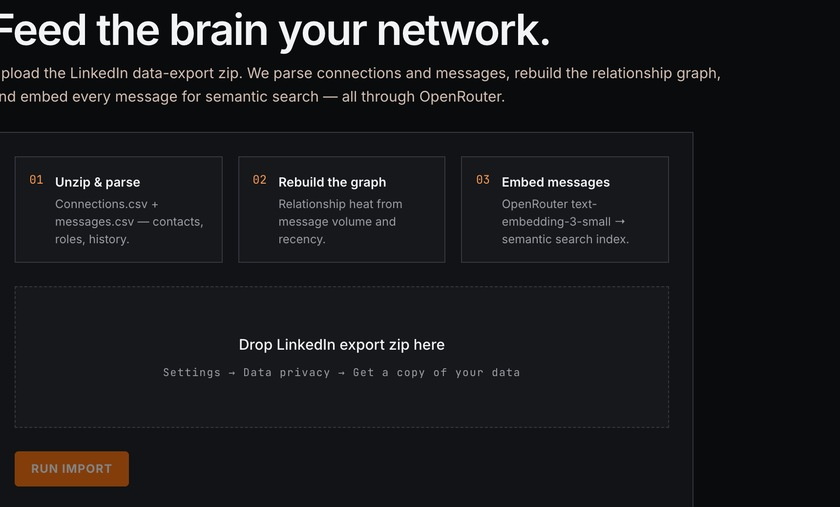
Drop the LinkedIn export. Connections, messages, embedded.
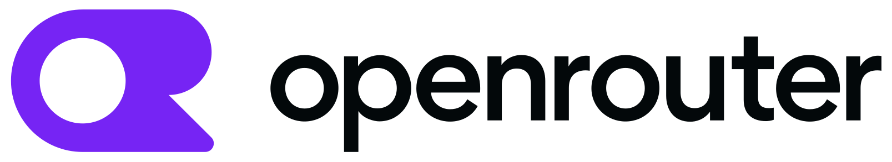
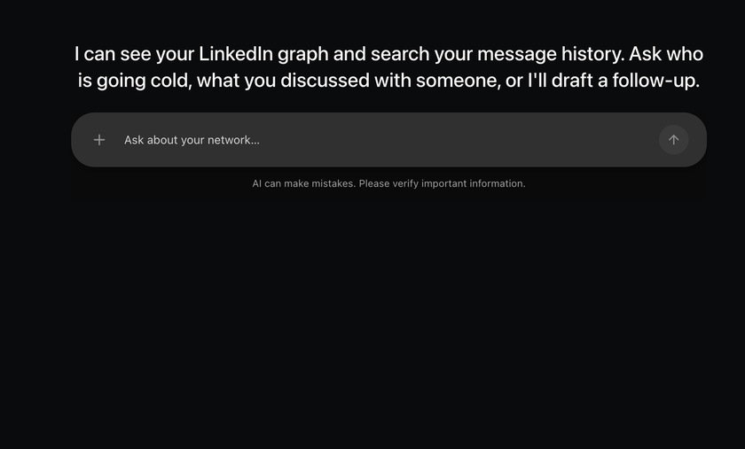
“Who do I know in crypto product in Dubai?” — ranked, with the route.


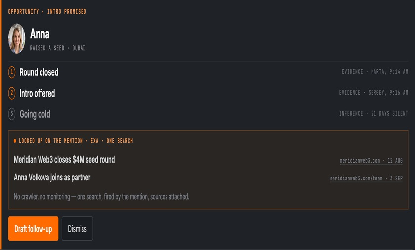
A mention in the thread. It reads what was said and looks up the rest.
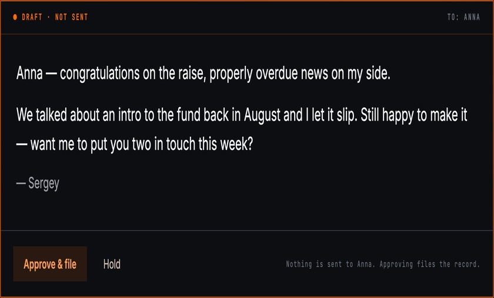
It writes the message and stops. The button does not say Send.
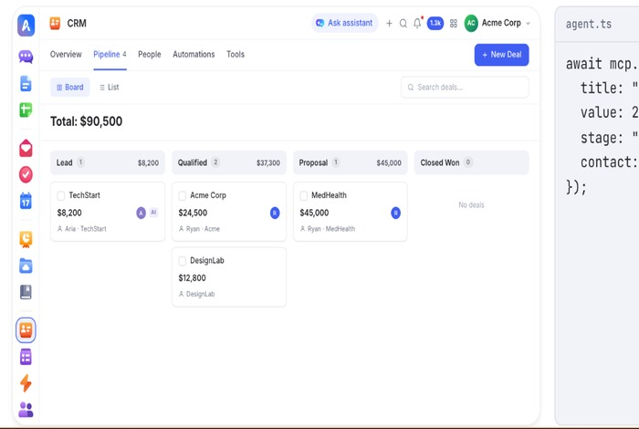
Approve → contact, activity and task in the workspace.
One agent, many tools —
around one memory.
What ships today is one agent with a toolset — not twenty. It reads the thread, queries the graph, searches the web on the mention, drafts, and files. One agent, five tools, two surfaces.
The six groups on the ring are the target shape, taken one-to-one from the stack that already runs for twenty-three clients. Outreach is the group that ships here, because it is the only one that writes the graph — the other five read it.
The machine Career Brain plugs into.
- Public APIsHIMALAYAS · REMOTEOK · ADZUNA · HH
- Scrape where there is no APIFIRECRAWL · APIFY · LINKEDIN
- Telegram · MTProtoJOB CHANNELS
- Relationship graphYOUR OWN ARCHIVE
- Outreach ships todayTHE ONLY GROUP THAT WRITES THE GRAPH
- Runner by configGLM · OPENROUTER · CLI
- Facts unverified→ REPAIR OR REFUSE
- AI style · leaked data→ NEVER REACHES THE CLIENT
- The thread agentOPENAI · COPILOTKIT
- AccessCLIENT SIGNS IN BY EMAIL
- Durable ObjectONE PER CLIENT · THE TRUTH
- KV mirrorREAD + ROLLBACK
- Ambiguous · MCP856 TOOLS · THE SHARED RECORD
- Client boardCARDS · DECISIONS · FUNNEL
- Slack threadTHE AGENT LIVES HERE
- Web appIMPORT · GRAPH · ASK
- Nothing auto-sendsA HUMAN PRESSES SEND
Five tools. Five jobs.
Thread in → signal, card, draft out.
Channels in Slack, React in the web app.
Contact, note, task — as the agent's own identity.
Enrichment the thread only named.
Search by meaning, not by keyword.
the promise
was made.